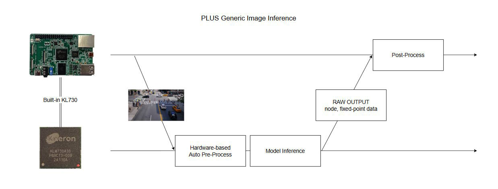
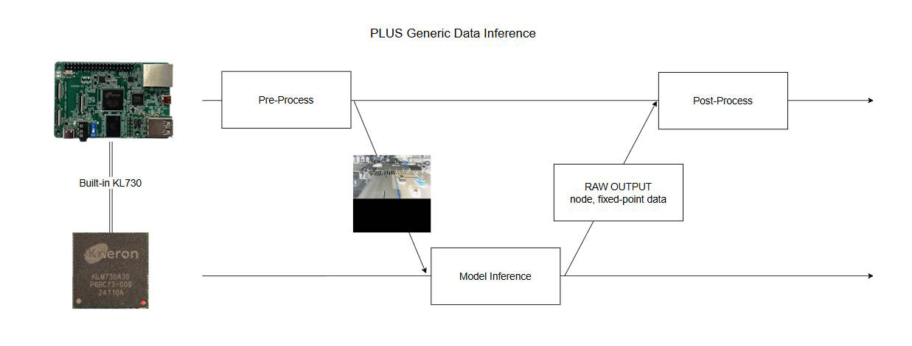
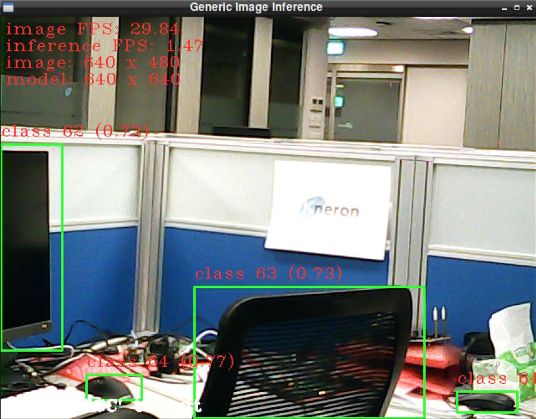

PLUS Examples in C code¶
Kneron PLUS is an API-based software library, which allows users to control their AI devices.
In the Introduction, we have introduced the concept of inference flow containing these three main executions: Data Pre-processing, Inference, and Post-Processing.
Based on where the pre-processing is executed, there are two types of inference API has been provided in Kneron PLUS:
- Generic Image Inference: The pre-process runs on built-in AI chip KL730 via hardware component.

- Generic Data Inference: The pre-process is executed by users before running PLUS Inference API.

PLUS Examples in C code provided in KNEO Pi are limited to these two usages. If users wish to explore further usage of Kneron PLUS, please refer to this documentation site for more information.
Library Preparation¶
The PLUS library should be installed under /usr/lib/, and the header files should be under /usr/include/plus/.
Examples¶
Note
The examples must be run under the root account.
Build Examples¶
Users can use the build script ${kneopi-example}/ai_application/plus_c/build_all.sh to build an individual example or All examples.
$ cd ${kneopi-example}/ai_application/plus_c/
$ sh build_all.sh
Please select the example(s) to be build:
---------------- Basic Examples ----------------
[1] scan_devices
[2] kl730_demo_generic_data_inference
[3] kl730_demo_generic_image_inference
[4] All basic examples
---------------- OpenCV Example ----------------
[5] kl730_demo_cam_generic_image_inference_drop_frame
---------------- All Examples ------------------
[6] All examples
Please enter 1-6:
Or users can build each example manually through cmake. The following steps use kl730_demo_generic_image_inference as a demonstration.
$ cd ${kneopi-example}/ai_application/plus_c/
$ mkdir build
$ cd build
$ cmake ../kl730_demo_generic_image_inference
$ make
Execute Examples¶
The executable binary will be put in bin/. Users can execute them as shown below:
scan_devices¶
This example shows how to use PLUS API to search the Kneron AI devices that are connected to KNEO Pi.
Even without using an external NPU device, users will still see KL730's NPU virtualized as a USB device in this example.
[root@kneo-pi bin]# ./scan_devices
scanning kneron devices ...
number of Kneron devices found: 1
listing devices infomation as follows:
[0] scan_index: '0'
[0] port ID: '5'
[0] product_id: '0x732' (KL730)
[0] USB link speed: 'Super-Speed'
[0] USB port path: '5-1'
[0] kn_number: '0x 9011004'
[0] Connectable: 'True'
[0] Firmware: 'KDP2 Loader/L'
kl730_demo_generic_data_inference¶
This example shows the usage of the API kp_generic_image_inference_send() and kp_generic_image_inference_receive().
Please refer to this documentation site for detailed information.
[root@kneo-pi bin]# ./kl730_demo_generic_image_inference
connect device ... OK
upload firmware ... OK
upload model ... OK
read image ... OK
starting inference loop 10 times:
..........
inference loop is done
number of output node : 3
node 0:
shape [0]: 1:
shape [1]: 255:
shape [2]: 80:
shape [3]: 80:
number of data (float): 1632000:
first 20 data:
0.617, 0.516, 0.469, 0.508, 0.523, 0.461,
0.430, 0.445, 0.531, 0.523, 0.531,
0.547, 0.516, 0.539, 0.500, 0.484,
0.492, 0.516, 0.484, 0.484,
node 1:
shape [0]: 1:
shape [1]: 255:
shape [2]: 40:
shape [3]: 40:
number of data (float): 408000:
first 20 data:
0.570, 0.438, 0.445, 0.461, 0.484, 0.375,
0.430, 0.477, 0.531, 0.555, 0.617,
0.664, 0.625, 0.586, 0.516, 0.492,
0.523, 0.531, 0.547, 0.477,
node 2:
shape [0]: 1:
shape [1]: 255:
shape [2]: 20:
shape [3]: 20:
number of data (float): 102000:
first 20 data:
0.492, 0.445, 0.484, 0.586, 0.484, 0.367,
0.406, 0.438, 0.461, 0.461, 0.469,
0.477, 0.547, 0.523, 0.562, 0.523,
0.531, 0.555, 0.523, 0.367,
dumped node 0 output to 'output_car_park_barrier_608x608_node0_1x255x80x80.txt'
dumped node 1 output to 'output_car_park_barrier_608x608_node1_1x255x40x40.txt'
dumped node 2 output to 'output_car_park_barrier_608x608_node2_1x255x20x20.txt'
kl730_demo_generic_image_inference¶
This example shows the usage of the API kp_generic_data_inference_send() and kp_generic_data_inference_receive().
Please refer to this documentation site for detailed information.
[root@kneo-pi bin]# ./kl730_demo_generic_data_inference
connect device ... OK
upload firmware ... OK
upload model ... OK
read image ... OK
prepare model input data ... OK
starting inference loop 10 times:
..........
inference loop is done.
number of output node : 3
node 0:
shape [0]: 1:
shape [1]: 255:
shape [2]: 80:
shape [3]: 80:
number of data (float): 1632000:
first 20 data:
0.625, 0.633, 0.555, 0.492, 0.555, 0.219,
0.367, 0.633, 0.516, 0.250, 0.422,
0.438, 0.469, 0.461, 0.547, 0.617,
0.453, 0.445, 0.727, 0.547,
node 1:
shape [0]: 1:
shape [1]: 255:
shape [2]: 40:
shape [3]: 40:
number of data (float): 408000:
first 20 data:
0.617, 0.609, 0.430, 0.484, 0.383, 0.398,
0.570, 0.414, 0.453, 0.727, 0.508,
0.484, 0.469, 0.477, 0.617, 0.609,
0.570, 0.094, 0.289, 0.500,
node 2:
shape [0]: 1:
shape [1]: 255:
shape [2]: 20:
shape [3]: 20:
number of data (float): 102000:
first 20 data:
0.664, 0.164, 0.438, 0.539, 0.547, 0.656,
0.656, 0.758, 0.273, 0.359, 0.453,
0.430, 0.508, 0.484, 0.477, 0.492,
0.508, 0.539, 0.469, 0.359,
dumped node 0 output to 'output_people_talk_in_street_640x640_node0_1x255x80x80.txt'
dumped node 1 output to 'output_people_talk_in_street_640x640_node1_1x255x40x40.txt'
dumped node 2 output to 'output_people_talk_in_street_640x640_node2_1x255x20x20.txt'
kl730_demo_cam_generic_image_inference_drop_frame¶
The above examples use one image as input data and only print the results on the console log.
This example demonstrates how to get images from a webcam using OpenCV and display them with bounding boxes, which are generated through post-processing from the raw inference output.
The default device path of the webcam is set to /dev/video0, but it may not be the same every time due to the timing when the webcam is connected to KNEO Pi.
To search the device path of the webcam, please use the command below:
$ v4l2-ctl --list-devices
[root@kneo-pi ~]# v4l2-ctl --list-devices
vpl_voc2.0 (platform:vpl_voc):
/dev/video2
/dev/video3
/dev/video4
/dev/video5
/dev/video6
/dev/video7
/dev/video8
/dev/video9
USB2.0 Camera: USB2.0 Camera (usb-xhci-hcd.1.auto-1):
/dev/video0
/dev/video1
/dev/media0
Info
This example also shows how to implement a post-process for the raw output data.
[root@kneo-pi bin]# ./kl730_demo_cam_generic_image_inference_drop_frame
connect device ... OK
upload firmware ... OK
upload model ... OK
configure inference frame-droppable ... OK
open camera ... OK
